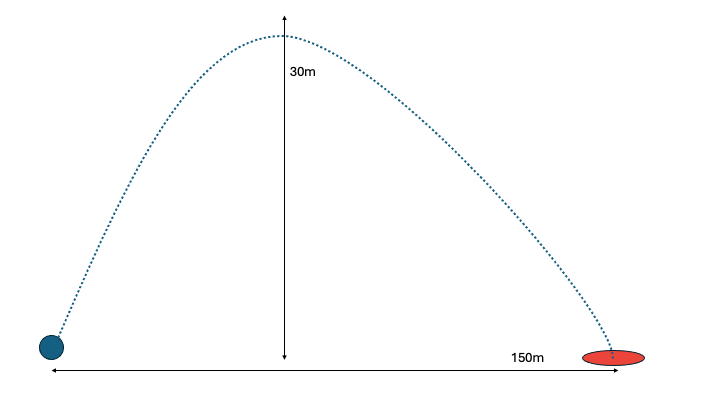
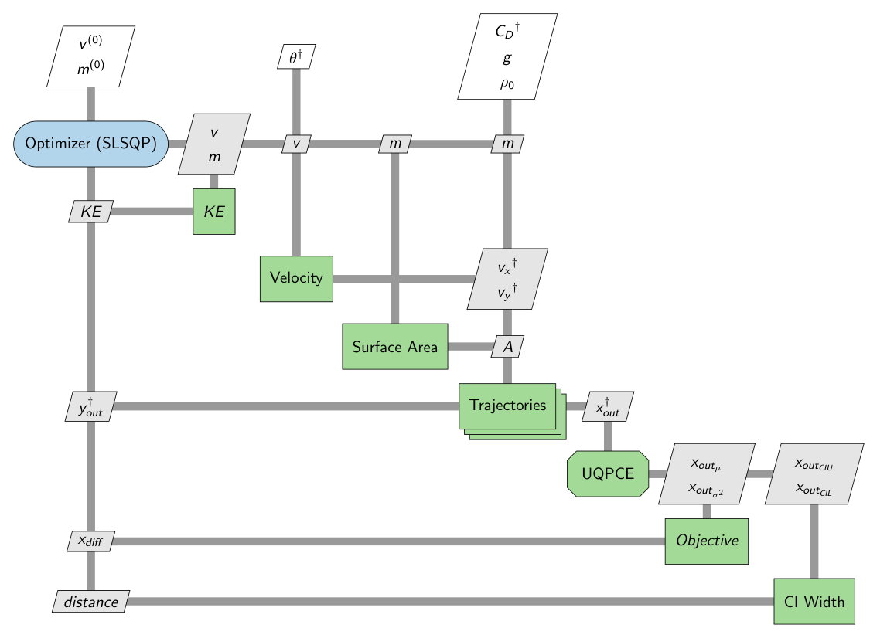
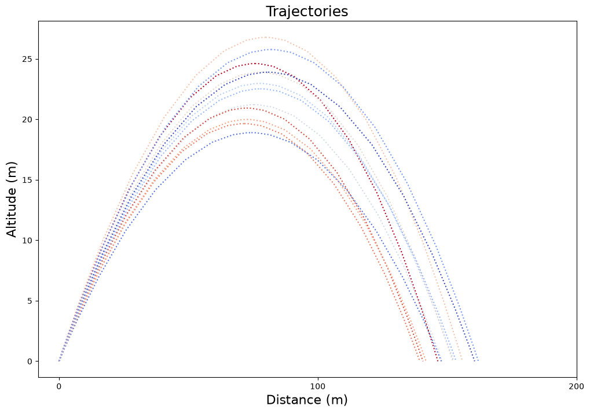
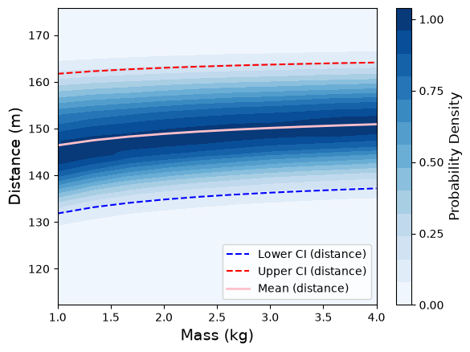
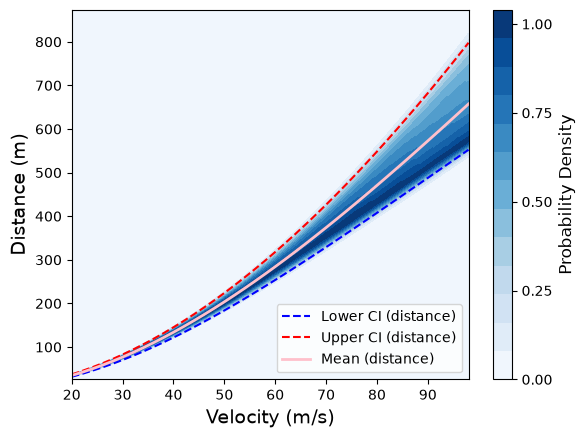

Building Multi-Phase Trajectory with UQPCE and Dymos#
This problem demonstrates how to collectively use the UQPCE, Dymos, and OpenMDAO frameworks together.
Indoor Shot Put#
Consider an indoor shot put game. The goal is to solve for optimal values of mass and velocity so the metal ball reaches as close as possible to the target 150m away, subject to physical constraints.

This example is a demonstration of a simple projectile motion problem design under uncertainty.#
Dymos is used for implementation of the differential equations of motion and mapping of trajectory paths.
UQPCE is used to develop a polynomial-chaos expansion surrogate model, where sample points of the uncertain variables are provided.
UQPCE is connected to Dymos in this problem using the framework of OpenMDAO.
Problem Composition#
The drag coefficient and angle relative to the ground are represented by uncertain variables, sampled from uniform and normal distributions, respectively. The distribution for the drag coefficient ranges from 0.1 to 0.9. The distribution for the angle theta has a mean of 30 and standard deviation of 2.
Each trajectory correlates to uncertain sample values for drag coefficient and angle. The trajectory is composed of two phases, ascent and descent.
The problem iterates to find the design variable (mass and velocity) values which optimize the objective function.
Variables#
A- Projectile surface area (dependent on mass)m- Mass (design variable)v- Velocity (design variable)g- Acceleration due to gravity (constant)rho_0- Density of air (constant)vx- Velocity x-component (dependent on velocity and theta)vy- Velocity y-component (dependent on velocity and theta)c_d- Drag coefficient (uncertain variable)theta- Angle (uncertain variable)
Components#
Obj (objective): This component motivates the problem to optimize towards a mean x-distance of 150.
Cost (constraint): This component defines cost in terms of kinetic energy.
WidthCI (constraint): This component constrains the upper bound of the confidence interval width, encouraging less variance.
Area (computation): The component is used to connect the current value of mass into the computation for cross-sectional area.
V_Comp (computation): This component separates the velocity vector into its respective x and y components.
EOM (computation): This component defines the equations of motion for the trajectories in this problem.

import openmdao.api as om
import dymos as dm
import numpy as np
import matplotlib.pyplot as plt
import matplotlib.cm as cm
import jax.numpy as jnp
from uqpce.mdao import interface
from uqpce.mdao.uqpcegroup import UQPCEGroup
from openmdao.core.parallel_group import ParallelGroup
[runnervmzvulz:02946] mca_base_component_repository_open: unable to open mca_btl_openib: librdmacm.so.1: cannot open shared object file: No such file or directory (ignored)
Cost Constraint#
In this problem, cost is evaluated as a constraint, taking inputs of mass and velocity and computing kinetic energy. This constraint is bounded between 500 and 5000.
class Cost(om.ExplicitComponent):
"""
OpenMDAO Explicit Component which computes cost using Kinetic Energy,
a function of mass and velocity. Component behaves as a constraint.
Underlying functionality transforms velocity from scalar to vector and
feeds mass directly through input to output.
"""
def initialize(self):
self.options.declare('num_samples', types=int)
def setup(self):
n = self.options['num_samples']
self.add_input('v', units='m/s')
self.add_input('m', units='kg')
self.add_output('cost', units='m')
self.add_output('v_out', shape=(n,), units='m/s')
self.add_output('m_out', units='kg')
def setup_partials(self):
self.declare_partials(of='m_out', wrt='m', val=1.0)
self.declare_partials(of='v_out', wrt='v', val=1.0)
self.declare_partials(of='cost', wrt='m')
self.declare_partials(of='cost', wrt='v')
def compute(self, inputs, outputs):
n = self.options['num_samples']
outputs['cost'] = 0.5 * inputs['m'] * inputs['v'] ** 2
outputs['v_out'] = np.repeat(inputs['v'], n)
outputs['m_out'] = inputs['m']
def compute_partials(self, inputs, partials):
partials['cost', 'v'] = inputs['m'] * inputs['v']
partials['cost', 'm'] = 0.5 * inputs['v'] ** 2
Confidence Interval Width#
The width of the confidence interval for x-distance is evaluated as a constraint, computing the difference between upper and lower CI.
class WidthCI(om.ExplicitComponent):
"""
OpenMDAO Explicit Component which computes the difference between
upper and lower confidence interval bounds (with respect to distance traveled).
Component behaves as a constraint.
"""
def setup(self):
self.add_input('ci_lower')
self.add_input('ci_upper')
self.add_output('width')
def setup_partials(self):
self.declare_partials(of='width', wrt='ci_lower')
self.declare_partials(of='width', wrt='ci_upper')
def compute(self, inputs, outputs):
outputs['width'] = inputs['ci_upper'] - inputs['ci_lower']
def compute_partials(self, inputs, partials):
partials['width', 'ci_lower'] = -1.0
partials['width', 'ci_upper'] = 1.0
Velocity Components#
The V_Comp component is a method of computation to compute x-velocity and y-velocity components given the initial velocity of the problem and theta angle for each sample point.
class V_Comp(om.ExplicitComponent):
"""
OpenMDAO Explicit Component which computes x and y velocity components
provided the angle theta and initial velocity.
"""
def initialize(self):
self.options.declare('num_samples', types=int)
def setup(self):
n = self.options['num_samples']
self.add_input('v_in', shape=(n,), units='m/s')
self.add_input('theta', shape=(n,), units='rad')
self.add_output('vx', shape=(n,), units='m/s')
self.add_output('vy', shape=(n,), units='m/s')
def setup_partials(self):
n = self.options['num_samples']
ar = np.arange(n, dtype=int)
self.declare_partials('*', '*', rows=ar, cols=ar)
def compute(self, inputs, outputs):
th_rad = inputs['theta']
vx = inputs['v_in']*jnp.cos(th_rad)
vy = inputs['v_in']*jnp.sin(th_rad)
outputs['vx'] = vx
outputs['vy'] = vy
def compute_partials(self, inputs, partials):
th_rad = inputs['theta']
partials['vx', 'theta'] = inputs['v_in'] * (-1)*np.sin(th_rad)
partials['vx', 'v_in'] = np.cos(th_rad)
partials['vy', 'theta'] = inputs['v_in'] * np.cos(th_rad)
partials['vy', 'v_in'] = np.sin(th_rad)
Cross-sectional Area#
The Area component is a method of computation to determine the cross-sectional area of the projectile provided its mass.
Mass is a design variable that changes throughout the optimization. Since cross-sectional area depends on mass and the density is constant, the radius needs to be re-computed each iteration, which is then used to re-compute area.
class Area(om.ExplicitComponent):
"""
OpenMDAO Explicit Component which computes surface area provided
the mass of the projectile.
"""
def setup(self):
self.add_input('m', units='kg')
self.add_output('A', units='m**2')
def setup_partials(self):
self.declare_partials(of='A', wrt='m')
def compute(self, inputs, outputs):
# Density = 9340 kg/m^3 for metal ball
const = 3 / (4*np.pi*9340)
m = inputs['m']
outputs['A'] = np.pi * (const * m)**(2/3)
def compute_partials(self, inputs, partials):
const = 3 / (4*np.pi*9340)
m = inputs['m']
partials['A', 'm'] = ((2*np.pi)/3) * ((1/(const*m))**(1/3)) * const
Equations of Motion#
A Dymos trajectory is constructed using the equations of motion and derivatives for a projectile. This component is representative of the differential equations required to interpolate the trajectory values at a set of nodes along the curve.
class EOM(om.JaxExplicitComponent):
"""
Jax Explicit Component which computes the equations of motion used by Dymos
for trajectory interpolation.
"""
def initialize(self):
self.options.declare('num_nodes', types=int)
def setup(self):
nn = self.options['num_nodes']
self.add_input('y', shape=(nn,), units='m')
self.add_input('vx', shape=(nn,), units='m/s')
self.add_input('vy', shape=(nn,), units='m/s')
self.add_input('c_d', shape=(1), units='unitless')
self.add_input('A', shape=(1), units='m**2')
self.add_input('m', shape=(1), units='kg')
self.add_input('g', shape=(1), val=9.80665, units='m/s**2')
self.add_input('rho_0', shape=(1), val=1.22, units='kg/m**3')
self.add_output('x_dot', shape=(nn,), units='m/s', tags=['dymos.state_rate_source:x', 'dymos.state_units:m'])
self.add_output('y_dot', shape=(nn,), units='m/s', tags=['dymos.state_rate_source:y', 'dymos.state_units:m'])
self.add_output('vx_dot', shape=(nn,), units='m/s**2', tags=['dymos.state_rate_source:vx', 'dymos.state_units:m/s'])
self.add_output('vy_dot', shape=(nn,), units='m/s**2', tags=['dymos.state_rate_source:vy', 'dymos.state_units:m/s'])
self.add_output('v', shape=(nn,), units='m/s')
def compute_primal(self, y, vx, vy, c_d, A, m, g, rho_0):
theta = jnp.arctan2(vy, vx)
rho = rho_0*jnp.exp(-y/8500)
v = jnp.sqrt(vx**2 + vy**2)
D = 0.5*rho*(v**2)*c_d*A
vx_dot = (-D/m) * jnp.cos(theta)
vy_dot = -g - (D/m) * jnp.sin(theta)
x_dot = vx
y_dot = vy
return x_dot, y_dot, vx_dot, vy_dot, v
Objective#
The objective for this problem is to optimize design variables such that constraints are followed and the projectile reaches the nearest possible x-distance to the target value (which is set to 150m in this problem).
class Obj(om.ExplicitComponent):
"""
OpenMDAO Explicit Component which defines the problem objective.
The goal is for the trajectory mean to be a minimum distance from
the target value.
"""
def initialize(self):
self.options.declare('num_samples', types=int)
def setup(self):
self.add_input('mean')
self.add_input('variance')
self.add_output('obj')
def setup_partials(self):
self.declare_partials(of='obj', wrt='mean')
def compute(self, inputs, outputs):
tgt = 150
outputs['obj'] = (tgt - inputs['mean']) ** 2
def compute_partials(self, inputs, partials):
tgt = 150
partials['obj', 'mean'] = -2 * (tgt - inputs['mean'])
Trajectory Definition#
Using Dymos, this function demonstrates the construction of a multiphase trajectory, composed of ascent and descent. The ascent phase is defined by constraining the trajectory to reach a final y-velocity of 0. The descent phase is defined by constraining the final height to 0. Note the addition of each trajectory to a parallel group.
def traj_init(parallel, i, vals):
"""
Initialize each Dymos trajectory in parallel using set parameter values
and sample values. Each trajectory is multi-phase, composed of ascent and
descent phases.
"""
# Initialize trajectory of name variation i
n_traj = 'traj'+str(i)
traj = dm.Trajectory()
tx = dm.PicardShooting(num_segments=1, nodes_per_seg=11, solve_segments='forward')
tx2 = dm.PicardShooting(num_segments=1, nodes_per_seg=11, solve_segments='forward')
parallel.add_subsystem(n_traj, traj)
ascent = traj.add_phase('ascent', dm.Phase(ode_class=EOM, transcription=tx))
ascent.set_time_options(fix_initial=True, fix_duration=True)
ascent.add_state('x', rate_source='x_dot', fix_initial=True, fix_final=False)
ascent.add_state('y', rate_source='y_dot', fix_initial=True, fix_final=False)
ascent.add_state('vx', rate_source='vx_dot', input_initial=True, fix_initial=False, fix_final=False)
ascent.add_state('vy', rate_source='vy_dot', input_initial=True, fix_initial=False, fix_final=False)
ascent.add_parameter('c_d', units='unitless', val=vals['c_d'])
ascent.add_parameter('A', units='m**2')
ascent.add_parameter('g', units='m/s**2', val=vals['g'])
ascent.add_parameter('rho_0', units='kg/m**3', val=vals['rho_0'])
ascent.add_parameter('m', units='kg')
ascent.add_boundary_balance(param='t_duration', name='vy', tgt_val=0.0, loc='final', lower=0.1, upper=100.0)
ascent.nonlinear_solver = om.NewtonSolver(solve_subsystems=True, maxiter=100, iprint=0, debug_print=True)
ascent.nonlinear_solver.linesearch = om.ArmijoGoldsteinLS()
ascent.nonlinear_solver.debug_print = True
ascent.linear_solver = om.DirectSolver()
descent = traj.add_phase('descent', dm.Phase(ode_class=EOM, transcription=tx2))
descent.set_time_options(input_initial=True, fix_duration=True)
descent.add_state('x', rate_source='x_dot', input_initial=True, fix_final=False)
descent.add_state('y', rate_source='y_dot', input_initial=True, fix_final=False)
descent.add_state('vx', rate_source='vx_dot', input_initial=True, fix_final=False)
descent.add_state('vy', rate_source='vy_dot', input_initial=True, fix_final=False)
descent.add_parameter('c_d', units='unitless', val=vals['c_d'])
descent.add_parameter('A', units='m**2') #, val=vals['A'])
descent.add_parameter('g', units='m/s**2', val=vals['g'])
descent.add_parameter('rho_0', units='kg/m**3', val=vals['rho_0'])
descent.add_parameter('m', units='kg') #, val=vals['m'])
descent.add_boundary_balance(param='t_duration', name='y', tgt_val=0.0, loc='final', lower=0.1, upper=100.0)
descent.nonlinear_solver = om.NewtonSolver(solve_subsystems=True, maxiter=100, iprint=0, debug_print=True)
descent.nonlinear_solver.linesearch = om.ArmijoGoldsteinLS()
descent.nonlinear_solver.debug_print = True
descent.linear_solver = om.DirectSolver()
traj.link_phases(phases=('ascent', 'descent'), connected=True, vars='*')
return traj, ascent, descent
# Initial values and ranges defined for phase state variables
def phase_setup(ranges, ascent, descent):
"""
State initialization for each ascent and descent phase.
"""
ascent.set_time_val(initial=ranges['t_init'], duration=ranges['t_dur'])
ascent.set_state_val('x', [ranges['x_init'], ranges['x_dur']])
ascent.set_state_val('y', [ranges['y_init'], ranges['y_dur']])
descent.set_time_val(initial=ranges['t_init'], duration=ranges['t_dur'])
descent.set_state_val('x', [ranges['x_init'], ranges['x_dur']])
descent.set_state_val('y', [ranges['y_init'], ranges['y_dur']])
Problem Definition#
The problem is initialized with each component above added as a subsystem. Trajectories are defined for each sample point of uncertain variables. The problem is optimized and the resulting trajectories are plotted.
def run():
# Initialize given input files
input_file = '../../uqpce/examples/dymos_projectile/drag_angle.yaml'
matrix_file = '../../uqpce/examples/dymos_projectile/matrix_drag.dat'
(
var_basis, norm_sq, resampled_var_basis,
aleatory_cnt, epistemic_cnt, resp_cnt, order, variables,
sig, run_matrix
) = interface.initialize(input_file, matrix_file)
# Problem setup
prob = om.Problem()
phases = []
vals = {
'c_d': 0.5,
'A': 0.001,
'g': 9.80665,
'rho_0': 1.22,
'm': 1
}
# Cost constraint subsystem
prob.model.add_subsystem(
'cost', Cost(num_samples=resp_cnt),
promotes_inputs=['v', 'm'], promotes_outputs=['cost', 'v_out', 'm_out']
)
# Velocity components subsystem
prob.model.add_subsystem('v_comp', V_Comp(num_samples=resp_cnt),
promotes_inputs=[('v_in', 'v_out'), 'theta'],
promotes_outputs=['vx', 'vy'])
prob.model.add_subsystem('area', Area(), promotes_inputs=['m'], promotes_outputs=['A'])
# Parallel subsystem for trajectories
parallel = prob.model.add_subsystem('parallel', ParallelGroup(), promotes_inputs=['*'], promotes_outputs=['*'])
for i in range(0, resp_cnt):
n_traj = 'traj'+str(i)
# Set drag coefficient based on current sample
vals['c_d'] = run_matrix[i, 0]
# Trajectory and phase initialization
traj, ascent, descent = traj_init(parallel, i, vals)
phases.append((ascent, descent))
# Connect initial velocity components to current trajectory
prob.model.connect('vx', n_traj+'.ascent.initial_states:vx', src_indices=[i])
prob.model.connect('vy', n_traj+'.ascent.initial_states:vy', src_indices=[i])
prob.model.connect('m_out', n_traj+'.ascent.parameters:m')
prob.model.connect('A', n_traj+'.ascent.parameters:A')
prob.model.connect('m_out', n_traj+'.descent.parameters:m')
prob.model.connect('A', n_traj+'.descent.parameters:A')
# MuxComp subsystem for trajectory final distance values
mux_comp = prob.model.add_subsystem(name='mux', subsys=om.MuxComp(vec_size=resp_cnt))
mux_comp.add_var('x_out', shape=(1,), units='m')
# Connect timeseries.x for each traj to mux.x_out variable
for i in range(0, resp_cnt):
n_traj = 'traj'+str(i)
xval = n_traj+'.'+'descent.timeseries.x'
mux_val = 'mux.x_out_' + str(i)
# Src_indices correlated to final value of timeseries.x
prob.model.connect(xval, mux_val, src_indices=[10])
prob.model.connect('mux.x_out', 'x_out')
# MuxComp subsystem for trajectory max heights
ymux_comp = prob.model.add_subsystem(name='ymux', subsys=om.MuxComp(vec_size=resp_cnt))
ymux_comp.add_var('y_max', shape=(1,), units='m')
# Connect ascent timeseries.y for each traj to mux.y_max variable
for i in range(0, resp_cnt):
n_traj = 'traj'+str(i)
xval = n_traj+'.'+'ascent.timeseries.y'
mux_val = 'ymux.y_max_' + str(i)
# Src_indices correlated to final value of timeseries.x
prob.model.connect(xval, mux_val, src_indices=[10])
# UQPCE subsystem definition
prob.model.add_subsystem(
'UQPCE',
UQPCEGroup(
significance=sig, var_basis=var_basis, norm_sq=norm_sq,
resampled_var_basis=resampled_var_basis, tail='both',
epistemic_cnt=epistemic_cnt, aleatory_cnt=aleatory_cnt
),
promotes_inputs=[('responses', 'x_out')],
promotes_outputs=['mean', 'ci_upper', 'ci_lower', 'resampled_responses', 'variance']
)
# Confidence Interval subsystem definition
prob.model.add_subsystem(
'CI', WidthCI(),
promotes_inputs=['ci_lower', 'ci_upper'],
promotes_outputs=['width']
)
# Objective subsystem definition
prob.model.add_subsystem(
'Objective', Obj(num_samples=resp_cnt),
promotes_inputs=['mean', 'variance'],
promotes_outputs=['obj']
)
# Optimizer definition
prob.driver = om.ScipyOptimizeDriver(optimizer='SLSQP', maxiter=50)
# Add design variables
prob.model.add_design_var('m', lower=1, upper=30)
prob.model.add_design_var('v', lower=20, upper=100)
# Add objective and constraints
prob.model.add_constraint('cost', lower=500, upper=5000, ref=10)
prob.model.add_constraint('width', upper=150)
prob.model.add_constraint('ymux.y_max', upper=30)
prob.model.add_objective('obj')
prob.set_solver_print(level=0)
prob.setup()
th_mat = run_matrix[:,1]
prob.set_val('theta', th_mat, units='deg')
ranges = {
't_init': 0,
't_dur': 5,
'x_init': 0,
'x_dur': 100,
'y_init': 0,
'y_dur': 50
}
# State initialization for each trajectory/phase
for i in range(0, resp_cnt):
phase_setup(ranges, phases[i][0], phases[i][1])
# Initialize system input variables
prob.set_val('v', 80)
prob.set_val('m', 12)
# Optimize problem and plot trajectories #
prob.run_driver()
# Plot trajectories
colors = cm.coolwarm(np.linspace(0, 1, resp_cnt))
cd_sort = np.sort(run_matrix[:, 0])
x_max = np.max(prob.get_val('x_out').squeeze())
x_ticks = np.arange(0, x_max + 100, 100)
count = 0
plt.figure(figsize=(12,8))
for i in range(0, resp_cnt):
n_traj = 'traj'+str(count)
xval = n_traj+'.'+'descent.timeseries.x'
yval = n_traj+'.'+'descent.timeseries.y'
color_idx = np.where(cd_sort == run_matrix[i, 0])
plt.plot(parallel.get_val(xval), parallel.get_val(yval), ':', color=colors[color_idx])
xval = n_traj+'.'+'ascent.timeseries.x'
yval = n_traj+'.'+'ascent.timeseries.y'
plt.plot(parallel.get_val(xval), parallel.get_val(yval), ':', color=colors[color_idx])
count += 1
plt.xticks(x_ticks)
plt.xlabel("Distance (m)", fontsize=16)
plt.ylabel("Altitude (m)", fontsize=16)
plt.title("Trajectories", fontsize=18)
print(f"Upper CI is {prob.get_val('ci_upper')}")
print(f"Lower CI is {prob.get_val('ci_lower')}")
print(f"Mean is {prob.get_val('mean')}")
print(f"Variance is {prob.get_val('variance')}")
print(f"Design Variable v is {prob.get_val('v')}")
print(f"Design Variable m is {prob.get_val('m')}")
print(f"Cost constraint is {prob.get_val('cost')}")
print(f"Maximum height is {np.max(prob.get_val('ymux.y_max'))}")
return prob
if __name__ == '__main__':
prob = run()
plt.show()
Negative mean squared error
Using an alternate equation
/usr/share/miniconda/envs/test/lib/python3.11/site-packages/openmdao/core/conn_graph.py:3352: UnitsWarning:<model> <class Group>: Output 'mux.x_out' with units of 'm' is connected to input 'x_out' which has no units.
/usr/share/miniconda/envs/test/lib/python3.11/site-packages/openmdao/utils/relevance.py:1296: OpenMDAOWarning:The following groups have a nonlinear solver that computes gradients and will be treated as atomic for the purposes of determining which systems are included in the optimization iteration:
parallel.traj0.phases.ascent
parallel.traj0.phases.descent
parallel.traj1.phases.ascent
parallel.traj1.phases.descent
parallel.traj10.phases.ascent
parallel.traj10.phases.descent
parallel.traj11.phases.ascent
parallel.traj11.phases.descent
parallel.traj2.phases.ascent
parallel.traj2.phases.descent
parallel.traj3.phases.ascent
parallel.traj3.phases.descent
parallel.traj4.phases.ascent
parallel.traj4.phases.descent
parallel.traj5.phases.ascent
parallel.traj5.phases.descent
parallel.traj6.phases.ascent
parallel.traj6.phases.descent
parallel.traj7.phases.ascent
parallel.traj7.phases.descent
parallel.traj8.phases.ascent
parallel.traj8.phases.descent
parallel.traj9.phases.ascent
parallel.traj9.phases.descent
Optimization terminated successfully (Exit mode 0)
Current function value: 4.186704672875676e-15
Iterations: 8
Function evaluations: 12
Gradient evaluations: 8
Optimization Complete
-----------------------------------
Upper CI is [165.5264481]
Lower CI is [135.15767207]
Mean is [150.00000006]
Variance is [62.35889738]
Design Variable v is [43.04814044]
Design Variable m is [1.14609561]
Cost constraint is [1061.93918433]
Maximum height is 26.778771775682554

Contour Plots#
Visualizations showing how x-distance changes as a design variable is scaled, with the other design variable held at a constant, optimal value.

